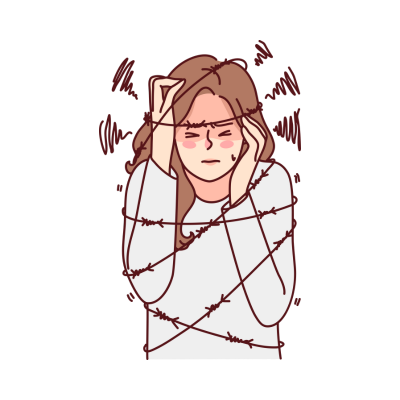

What is Psychosis?

Psychosis is a condition that affects the way an individual thinks, feels, and behaves, causing them to lose touch with reality. People experiencing psychosis may have difficulty distinguishing what is real from what is not. This condition can manifest as hallucinations (hearing or seeing things that are not there) or delusions (false beliefs), and it can lead to severe distress and impairment in daily life.
Psychosis can occur as a symptom of mental health conditions like schizophrenia, bipolar disorder, or severe depression, but it can also be triggered by trauma, substance abuse, or physical illnesses that affect the brain. It’s important to seek professional help if someone is experiencing psychotic symptoms, as early treatment can improve outcomes.
Symptoms of Psychosis
The symptoms of psychosis vary depending on the individual and the underlying cause. However, the most common symptoms include:
- Hallucinations: Sensing things that are not present, such as hearing voices, seeing things, or feeling things that others do not perceive.
- Delusions: False beliefs that are strongly held despite evidence to the contrary, such as believing one is being persecuted or has special powers.
- Disorganized thinking: Difficulty organizing thoughts, leading to incoherent speech or trouble concentrating on a conversation or task.
- Paranoia: An overwhelming sense of distrust or fear of others, often believing that others are plotting against them.
- Social withdrawal: Avoiding social interactions and becoming increasingly isolated from friends, family, and activities.
- Changes in behavior: Acting in unusual or uncharacteristic ways, such as becoming aggressive or unmotivated.
- Difficulty with reality testing: An inability to distinguish between what is real and what is imagined.
Symptoms of psychosis can be distressing and overwhelming, both for the individual experiencing them and for those around them. Early intervention and treatment can help manage symptoms effectively.
Causes of Psychosis
Psychosis can be caused by a variety of factors, including mental health disorders, physical health conditions, and external factors. Some common causes include:
- Schizophrenia: A chronic mental illness that often involves psychosis, including hallucinations and delusions.
- Bipolar disorder: Individuals with bipolar disorder can experience psychosis during manic or depressive episodes.
- Severe depression: Major depressive disorder can sometimes include psychotic symptoms, known as psychotic depression.
- Drug use: The use of drugs such as cannabis, cocaine, or hallucinogens can lead to drug-induced psychosis.
- Trauma or stress: Traumatic events or extreme stress can trigger psychosis in some individuals, especially those who are vulnerable.
- Brain injuries or illness: Conditions such as brain tumors, dementia, or infections that affect the brain can lead to psychotic episodes.
- Sleep deprivation: Severe lack of sleep can lead to psychosis-like symptoms, particularly hallucinations.
Identifying the cause of psychosis is crucial in determining the best course of treatment and management strategies.
Treatment for Psychosis
Treatment for psychosis depends on the underlying cause, but the primary goal is to manage symptoms and improve quality of life. Common treatment options include:
- Antipsychotic medications: These medications help reduce symptoms such as hallucinations and delusions. They are often the first line of treatment for psychosis.
- Cognitive Behavioral Therapy (CBT): CBT can help individuals manage their thoughts and behaviors, reducing the impact of psychosis and improving coping mechanisms.
- Hospitalization: In some cases, individuals may need to be hospitalized for stabilization and intensive treatment, especially if they are at risk of harming themselves or others.
- Supportive therapy: Ongoing therapy and counseling can help individuals understand and cope with the challenges of living with psychosis.
- Family therapy: Family members can benefit from therapy as well, learning how to support their loved one and cope with the impact of psychosis.
- Substance abuse treatment: If psychosis is caused or worsened by substance abuse, a program that addresses addiction is essential to recovery.
With early intervention and proper treatment, individuals with psychosis can often regain functioning and live fulfilling lives. Ongoing support is essential to long-term management.